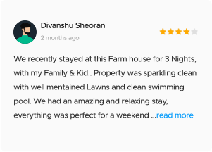

Design Language System
Garden
Garden is a design language system which aims to deliver a consistent experiences across different verticals. Garden is an ever evolving system to solve the problems of component
based design.
Garden was made for GuestHouser to solve their need to ship features fast to millions of users. Built on needed a coherent system to achieve a less-code fast-iteration framework
Garden was made for GuestHouser to solve their need to ship features fast to millions of users. Built on needed a coherent system to achieve a less-code fast-iteration framework


